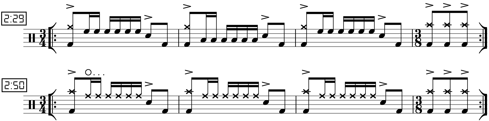
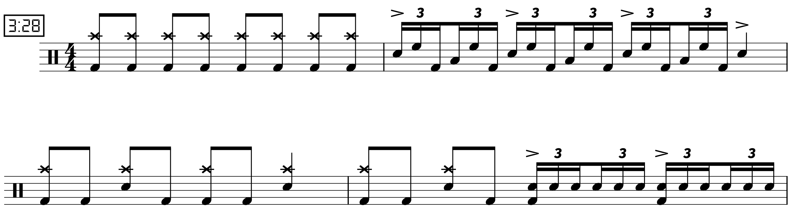

Transcription: “F.C.P.S.I.T.S.G.E.P.G.E.P.G.E.P.” — Andrew Forsman with The Fall of Troy

Depending on how old you are, you may look at the name of this song and thing what the hell kind of band is this? Well, many folks in my generation (and thereabouts) were first introduced to The Fall of Troy via good old Guitar Hero:
I’ll be shocked if you watch more than 30 seconds of that. Sorry, I had to pick the oldest video I could find; I may have watched that one myself years ago. And I have to admit, Guitar Hero doesn’t look very cool ten years later.
But anyway, that song is called “F.C.P.R.E.M.I.X.”, which The Fall Of Troy got featured in Guitar Hero III. Even as an adolescent, I had a habit of researching anything that intrigued me. I found out that, not unsurprisingly, “F.C.P.R.E.M.I.X.” is a remix/rearrangement of a song that the band released three years earlier, “F.C.P.S.I.T.S.G.E.P.G.E.P.G.E.P.”. Does the initialism stand for anything? Apparently the band has admitted that it doesn’t mean anything in particular, while there is some… interesting speculation online that I don’t feel like including here.
When I tracked down “F.C.P.S.I.T.S.G.E.P.G.E.P.G.E.P.”, I decided that I much prefer it to the remix, which is a bit frantic for my tastes. I get much more motion in the original, and there’s also more interesting stuff happening rhythmically.
I heard this track for the first time in years while I was college, as I was shuffling my library one day. I realized then that this tune may have been the first exposure I had to any sort of a serious ghost note groove. I deiced to jot down the highlights that the drummer dishes out on this track, since there are some interesting moves.
The main groove a pretty standard ghost note approach: filling in the space between kick drum hits with ghosts notes on the snare. It’s a tight groove, and I can recall being rather befuddled by the hi hat barks that are used to end each phrase.
The extended bridge/instrumental at 2:25 features a bit of mixed–meter action: three bars of 3/4 and one bar of 3/8 for each phrase. I think the drummer uses paradiddles to move around the toms:
After a built of a build, there’s a hard rocking section where the drummer so off some chops, including some fast singles, and a rather demanding Bonham–hand–foot–triplet fill:
Apparently the band took one of their springs breaks in high school to record the entire album, with each member being about 17 years old. Now THAT’S impressive… yet it seems to get bowled over by all the child prodigies on YouTube playing Metallica or whatever.
“F.C.P.S.I.T.S.G.E.P.G.E.P.G.E.P.” on Songwhip.
Posted on March 14, 2021
Tags: 2021 • Transcription • Andrew Forsman • The Fall of Troy